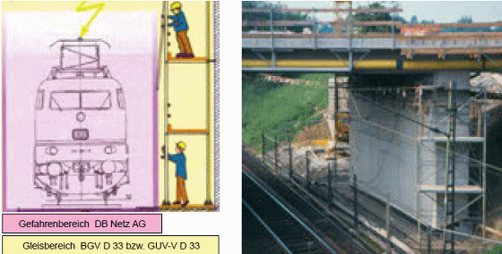
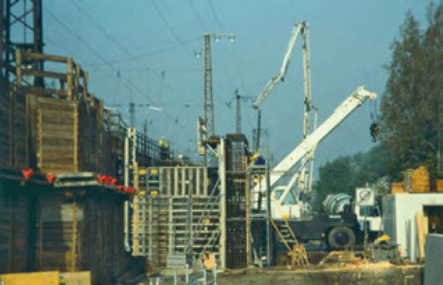

Bei Arbeiten an und in der Nähe von Gleisanlagen bestehen Gefährdungen durch bewegte Schienenfahrzeuge und durch unter Spannung stehende Teile wie Fahrleitungen, Stromschienen oder Speiseleitungen. Der Gleisbereich ist der von bewegten Schienenfahrzeugen in Anspruch genommene Raum sowie der Raum unter, neben oder über Gleisen, in dem Beschäftigte durch bewegte Schienenfahrzeuge gefährdet werden können (Abb. 1-1). Zum Gleisbereich gehört bei elektrisch betriebenen Bahnen auch der Bereich der Fahrleitungsanlage mit den davon zusätzlich ausgehenden Gefahren des elektrischen Stromes (Abb. 1-2).
Für alle Arbeiten, bei denen Personen, Maschinen oder Geräte im Gleisbereich eingesetzt werden sollen oder in den Gleisbereich hineingeraten können, sind Sicherungsmaßnahmen zum Schutz vor den Gefahren des Bahnbetriebs erforderlich. Dies gilt sowohl für Gleisbauarbeiten als auch für Arbeiten in der Nähe des Gleisbereichs, z. B. bei Tief- oder Ingenieurbauarbeiten oder bei Begehungen. Im Rahmen der Arbeitsvorbereitung muss der Unternehmer, der Arbeiten in der Nähe des Gleisbereichs auszuführen hat, prüfen, ob dabei ein Hineingeraten in den Gleisbereich möglich ist. Ist dies der Fall, müssen die Arbeiten beim Bahnbetreiber angezeigt werden. Erst dann, wenn die für den Bahnbetrieb zuständige Stelle (BzS) die Sicherungsmaßnahmen festgelegt hat und diese durchgeführt sind, darf mit den Arbeiten im Gleisbereich begonnen werden.
Hohe Geschwindigkeiten, große bewegte Massen und lange Bremswege sind kennzeichnend für den Eisenbahnbetrieb. Vorbeifahrende Züge können starke Sogwirkungen verursachen. Beschäftigte müssen vor den Gefahren aus dem Bahnbetrieb geschützt werden. Eine Sicherung durch technische oder organisatorische Maßnahmen oder durch Sicherungspersonal ist daher notwendig.
Bauen im Gleisbereich heißt Bauen unter den Vorgaben des Bahnbetriebs. Dieser soll einerseits durch die Arbeiten möglichst wenig behindert werden, andererseits sind Einschränkungen des Bahnbetriebs notwendig (Sperren von Gleisen, Langsamfahrstellen, Ausschluss von Sendungen mit Lademaßüberschreitung, Ausschalten von Fahrleitungen), um die Arbeiten sicher ausführen zu können. Oft muss unter großem Zeitdruck in knapp bemessenen Sperrpausen, direkt neben einem Betriebsgleis und in Nachtschichten gearbeitet werden. Unfälle können nur verhindert werden, wenn die Gefahren schon bei der Arbeitsvorbereitung erkannt und berücksichtigt werden.
Diese Schrift richtet sich in erster Linie an Unternehmen, die Arbeiten im Gleisbereich ausführen und soll den Beschäftigten (z. B. Arbeitsvorbereiter, Bauleiter, Aufsichtführende, Maschinenführer, Facharbeiter, Auszubildende) Gefahren bewusst machen und Hinweise geben, damit sie ihre Arbeit sicher ausführen können. Für Sicherungsaufsichten von Sicherungsunternehmen kann diese Schrift hilfreich sein, um Gefährdungen und Situationen zu erkennen, die eine Anpassung der Sicherungsmaßnahmen erfordern oder im Extremfall die Einstellung der Arbeiten notwendig machen. Neben den Gefährdungen durch den Bahnbetrieb und elektrischen Gefährdungen auf elektrisch betriebenen Bahnen werden auch die beim Einsatz von Gleisbaumaschinen auftretenden maschinentypischen Gefährdungen angesprochen. Die gemäß Arbeitsschutzgesetz [1] vom Unternehmer zu erstellende Gefährdungsbeurteilung erfordert darüber hinaus die Berücksichtigung aller weiteren auftretenden Gefährdungsfaktoren.

| Abb. 1-1: | Beispiel zum Gleisbereich: Beim Hantieren mit Gerüstrohren neben dem Gleis besteht die Gefahr, in den durch Druck- und Sogeinwirkungen gefährdeten Bereich hineinzugeraten oder den Schutzabstand zu unter Spannung stehenden Teilen der Fahrleitungsanlage zu unterschreiten. Der Gleisbereich umfasst in diesem Fall auch die Arbeitsplätze der Gerüstbauer. Bei der DB schließt der Gleisbereich den Gefahrenbereich ein (vgl. Anhang 3). |

| Abb. 1-2: | Bei Mobilkran und Betonpumpe besteht hier die Gefahr der Annäherung an die auf den Fahrleitungsmasten geführte Speiseleitung. |